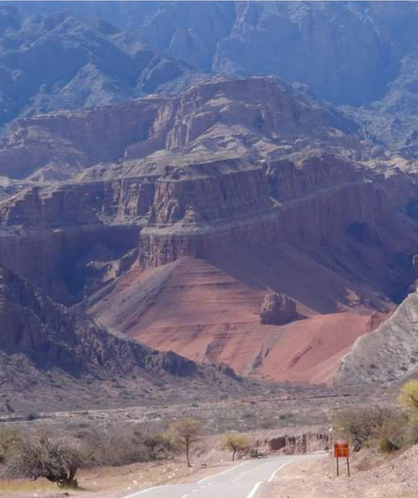
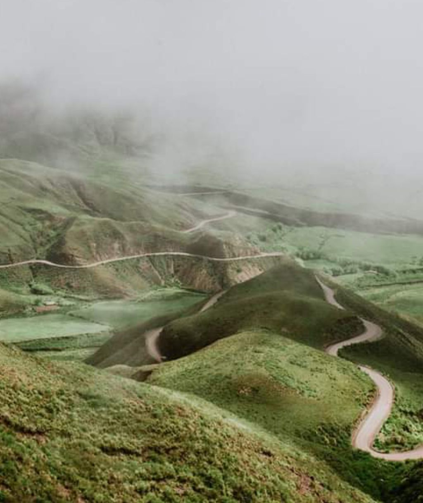
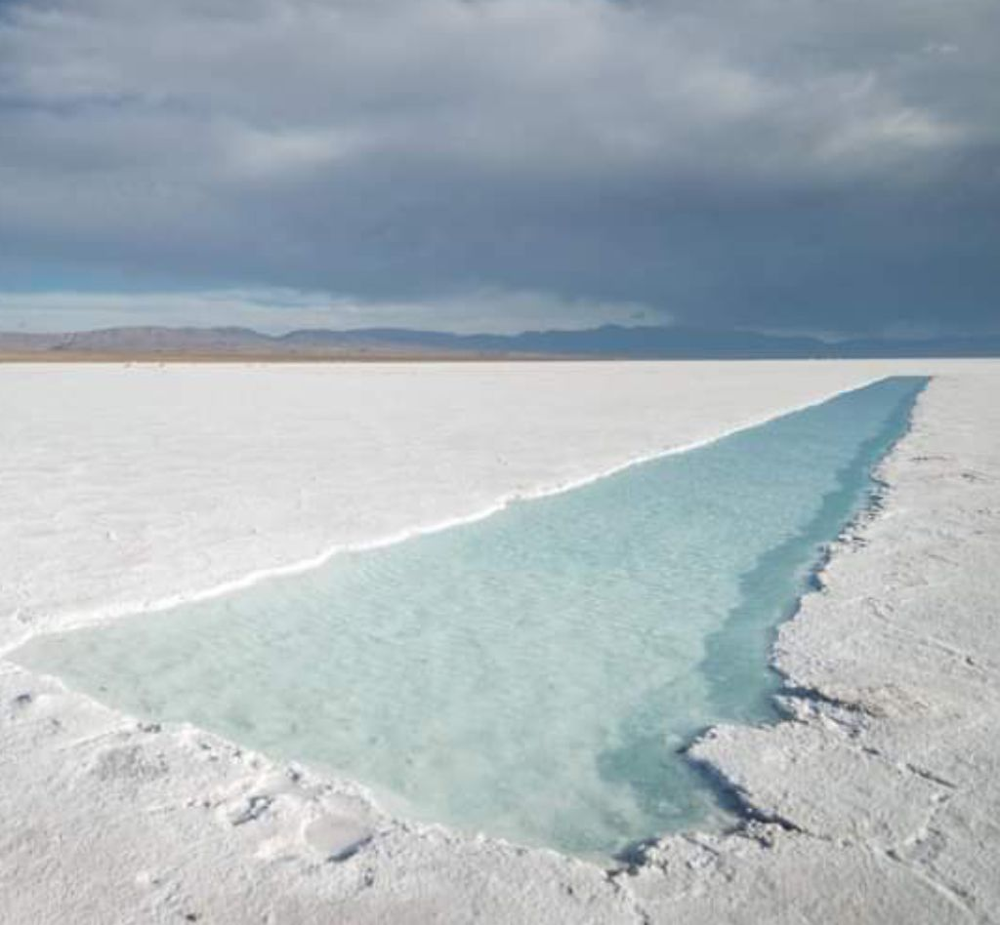

¿Has pensado alguna vez en viajar en moto por el norte de Argentina?
Con Vagabon moto tours todo es más fácil. No necesitas hacer nada. Solo contáctanos y armaremos tu viaje. Conocerás las montañas más coloridas del mundo y vivirás una experiencia inolvidable en este hermoso país.

Llegada a Salta
Llegamos a la ciudad de Salta en avión. Nuestro vehículo de apoyo los trasladará al hostel para descansar y entregarles las motos. Recorremos la ciudad y nos preparamos para disfrutar de una cena show típica del lugar como bienvenida para el día siguiente y comenzar a rodar.

De Salta a Cafayate | 200km
Comenzamos el día desayunando en la ciudad de Salta y recorreremos esta hermosa ruta por el desierto y las montañas coloradas, atravesando el anfiteatro natural, la garganta del diablo, la quebrada de las conchas y una hermosa ruta en moto asfaltada con muchas curvas hasta llegar a Cafayate para recorrer algunas bodegas y degustar los mejores vinos de Salta, luego nos dirigimos al Hostel para instalarnos y relajarnos un poco para proceder a disfrutar de una cena show y luego irnos a dormir para descansar bien para el día siguiente.
De Cafayate a Cachi | 180km
Camino de ripio por la sierra. Empezamos el día desayunando en Cafayate y vamos a recorrer un tramo de la mítica ruta 40 de Argentina hasta llegar a Cachi, que es un pequeño pueblo en medio de los valles calchaquíes, atravesando hermosos paisajes de montañas rocosas de distintas formas. También vamos a cruzar por el medio de la Quebrada de las Flechas haciendo un día completo de ripio por esos hermosos caminos calchaquíes hasta llegar a Cachi para disfrutar de la cena y luego dormir en un hermoso albergue de montaña.
De Cachi a Salta | 180km
Por la Cuesta del Obispo: 30 km de ripio y el resto asfaltado. Empezamos el día con un gran desayuno y emprendemos camino hacia la ciudad de Salta. Cruzando la fabulosa Cuesta del Obispo con muchas curvas y contra curvas atravesando parte de selva y parte de desierto con un paisaje increíble con una vista panorámica de todo el valle para luego llegar a Salta para pasar la noche en el mismo Hostel del primer día para disfrutar de una cena en el campo para cruzar la selva de las yungas al día siguiente para ingresar a la provincia de Jujuy.
De Salta a Tilcara
El segundo salar más grande de Sudamérica. Empezamos el día con un desayuno de campo y comenzamos la etapa de otra provincia. Vamos a cruzar la selva de las yungas de Jujuy con un camino muy sinuoso cruzando dos lagos hasta llegar a la ciudad de Jujuy para cruzarla por circunvalación para salir de la selva y llegar a la Puna de Jujuy para disfrutar de las montañas más coloridas del mundo. Vamos a cruzar Purmamarca, un pueblito muy pintoresco de Jujuy con el fondo de su montaña de siete colores para comenzar a subir la cuesta de Lipán para llegar a 13.500 pies sobre el nivel del mar para bajar al imponente salar para recorrerlo y luego volver a subir por la Cuesta de Lipán para llegar al hermoso pueblo de Tilcara donde vamos a tener una cena show para luego proceder a un hermoso Hostel para dormir.
El Hornocal. Cerro de los 14 colores.
Comenzamos el día con el desayuno en la hostería, luego visitaremos el pueblo de Tilcara y Humahuaca, dos pueblos muy pintorescos y atractivos turísticos del norte argentino para comenzar a ascender a un lugar mágico y único, una pendiente que nos llevará hasta los 4.400 metros sobre el nivel del mar donde apreciaremos toda la Puna de Jujuy para llegar al pico más alto y disfrutar del imponente Hornocal, un cerro de 14 colores diferentes. Luego bajamos del cerro para pasar nuevamente la noche en Tilcara y disfrutar de la comida típica y música en vivo del lugar.

Iruya
Vamos a partir desde Tilcara hasta llegar a Iruya. Iruya es un pueblo colgado de la montaña, es un pueblo mágico donde el camino de ripio con muchas curvas y cruces de ríos. Atravesando más de 10 montañas para encontrar este mágico lugar. Luego regresamos a Tilcara para celebrar la última noche con una cena show del lugar con costumbres muy argentinas.

De regreso a Salta
Salimos de Tilcara por la ruta 9 para despedirnos de las montañas de colores y regresar a la ciudad de Salta para conmemorarlos con obsequios y ceremonia de despedida para que regresen a casa sanos y salvos.